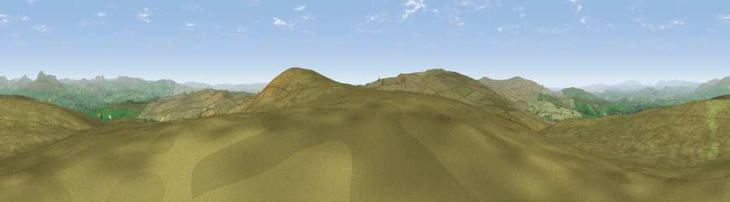

Viewpoint c9228_7386
#4489 in England · top 8% of its area beats it · —The view, rendered

A 360° render of this exact spot computed from the terrain model, tree cover and land cover — summer colours, afternoon light, calibrated against photographs of famous viewpoints. Real trees, hedges and buildings will differ in detail.
The panorama
Grey silhouette: terrain skyline in each direction (720 bearings, Earth curvature and refraction included). Dashed green: skyline with trees (+15 m) and buildings (+8 m) as obstacles. Blue strip: how far the ground is visible on each bearing.
Where the view opens
Wedge length = distance to the farthest visible ground on that bearing (vegetation-aware). Rings at 10, 25 and 50 km.
What fills the view
96% grassland · 3% woodland
Angular shares of the visible panorama (visual magnitude), not map area. Landscape diversity 0.09 (0–1 Shannon).
Key numbers
More beautiful places nearby
The staircase of upgrades: each row has a higher view potential than everything closer. Driving times are estimates from straight-line distance, calibrated against real road routing — check an actual route before setting out.
| Place | Direction | Drive | Score |
|---|---|---|---|
| Hailshowers Fell | SE · 1 km | ~2 min | 73.8 |
| Viewpoint c9157_7266 | WSW · 7 km | ~14 min | 75.6 |
| Viewpoint c9201_7202 | W · 9 km | ~18 min | 76.1 |
| Whins Brow | SW · 10 km | ~19 min | 76.3 |
| Viewpoint c9170_7172 | WSW · 11 km | ~21 min | 77.0 |
| Little Ingleborough | NNE · 13 km | ~24 min | 78.8 |
| Viewpoint near Ingleton | NNE · 14 km | ~25 min | 79.5 |
| Whernside | NNE · 21 km | ~35 min | 79.9 |
54.04832, -2.46999 · source: screening · position refined by local search. Computed location — check access rights before visiting.